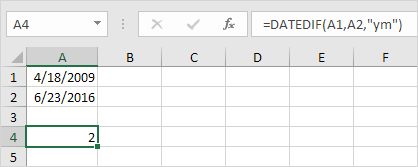
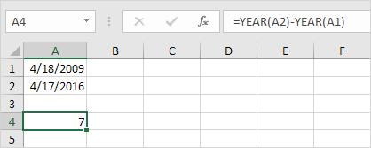

Isi "d" untuk argumen ketiga untuk mendapatkan jumlah hari di antara dua tanggal.

Catatan: =A2-A1 menghasilkan hasil yang sama persis!
Isi "m" untuk argumen ketiga untuk mendapatkan jumlah bulan di antara dua tanggal.

Isi "y" untuk argumen ketiga untuk mendapatkan jumlah tahun di antara dua tanggal.

Isi "yd" untuk argumen ketiga untuk mengabaikan tahun dan mendapatkan jumlah hari di antara dua tanggal.

Isi "md" untuk argumen ketiga untuk mengabaikan bulan dan mendapatkan jumlah hari di antara dua tanggal.

Isi "ym" untuk argumen ketiga untuk mengabaikan tahun dan mendapatkan jumlah bulan di antara dua tanggal.

Catatan penting: fungsi DATEDIF mengembalikan jumlah lengkap hari, bulan atau tahun. Ini mungkin memberikan hasil yang tidak terduga ketika nomor hari/bulan dari tanggal kedua lebih rendah dari nomor hari/bulan dari tanggal pertama. Lihat contoh di bawah ini.

Bedanya 6 tahun. Hampir 7 tahun! Gunakan rumus berikut untuk mengembalikan 7 tahun.
